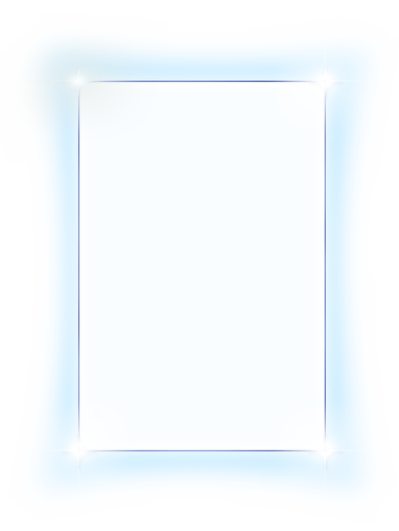
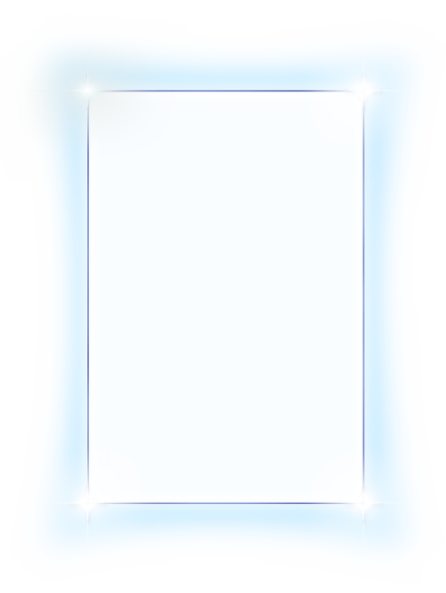
Una Imagen Bot
Una Imagen Bot es un espacio para explorar el paisaje visual propio,
una herramienta que invita a imaginar nuevas representaciones posibles de lo real
Una Imagen Bot
Una Imagen Bot es un proyecto que busca estimular el imaginario propio en un contexto virtual cada vez más mediado por imágenes hiper-producidas y lógicas algorítmicas que determinan lo que debe o no debe ser visto. Es concebido como un ejercicio de contra-imaginación para esquivar los distintos modelos de representación de la realidad que nos llegan desde las plataformas de contenido audiovisual online.
Una Imagen Bot es un proyecto en curso donde se investiga y ofrecen herramientas que inviten a imaginar nuevas representaciones posibles de lo real.
Una Imagen Bot propone imágenes posibles a traves de un Twitter Bot
Una Imagen Bot se encuentra en Twitter mediante una cuenta controlada por un bot programado para publicar twits de forma automática. Cada twit lanza una propuesta de imagen posible en formato texto (sin representación visual) y cuya estructura es generada aleatoriamente.
Cada twit propone una imagen posible de forma aleatoria y automática, sin intervención humana
 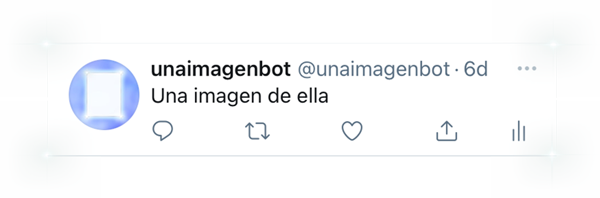
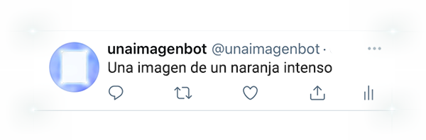
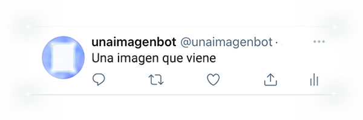
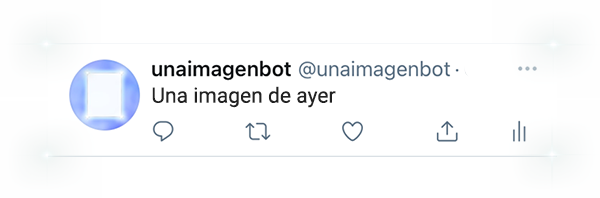
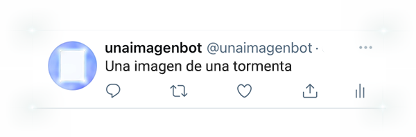
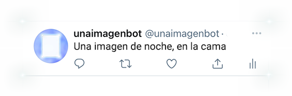
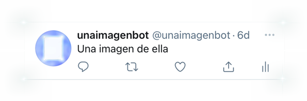
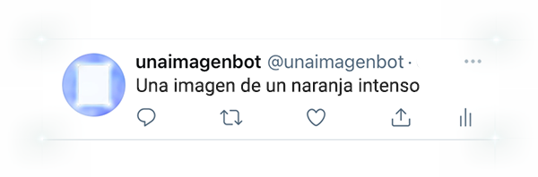
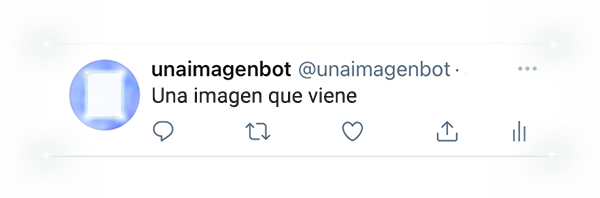
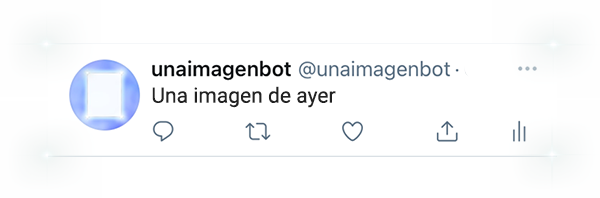
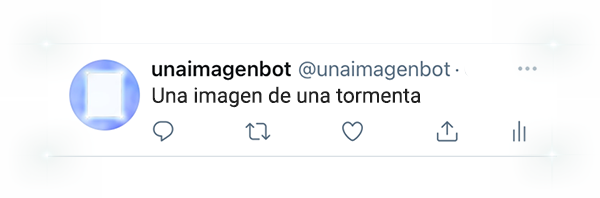
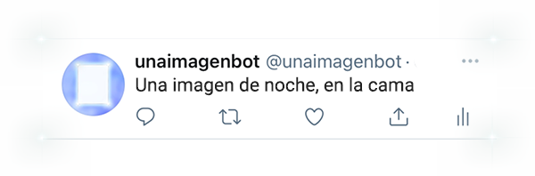
Encuentra a
Una Imagen Bot
en Twitter